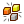

 Preset Cell
Component Index > IntraLattice > Cell > PresetCell
Built-in selection of unit cell topologies.
Inputs
| Name | ID | Description | Type |
|---|---|---|---|
| Cell Tye | Type | Unit cell topology type | Integer |
Outputs
| Name | ID | Description | Type |
|---|---|---|---|
| Topology | Topo | Unit cell topology | Generic |
| Lines | L | Optional output so you can modify the unit cell lines. Pass through the CustomCell component when you're done. | List of Line |
Copyright © 2016 Robert McNeel & Associates.